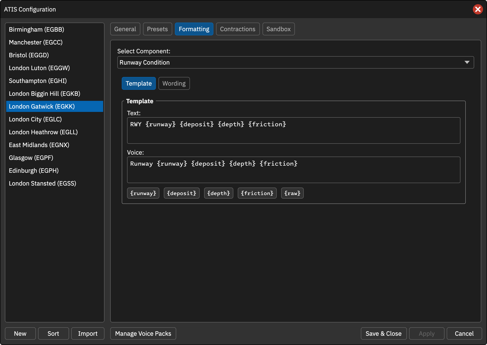
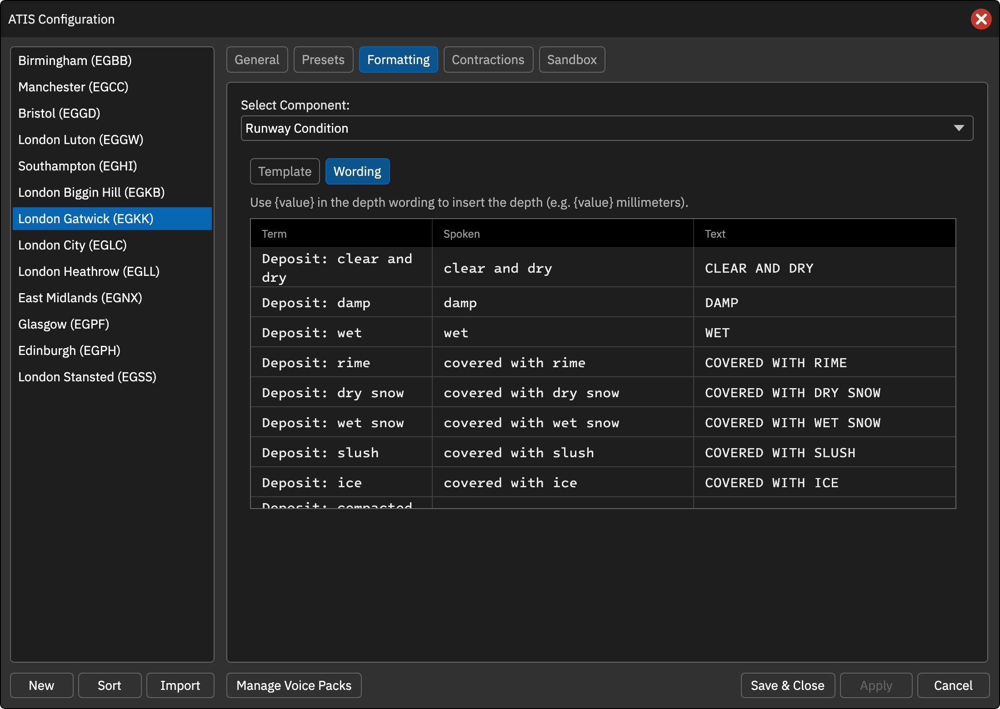

本页目录
跑道状况
非 FAA 席位可通过 [RWY_COND] / [RUNWAY_CONDITION] 插入 R25/290150 等 METAR 跑道状态，描述覆盖物、厚度和摩擦情况。
模板
默认文字 RWY {runway} {deposit} {depth} {friction}，默认语音 Runway {runway} {deposit} {depth} {friction}。
| 变量 | 含义 |
|---|---|
{runway} |
跑道编号 |
{deposit} |
覆盖物，如潮湿、雪浆 |
{depth} |
毫米或厘米厚度，未报时为空 |
{friction} |
估计摩擦情况，未报时为空 |
{raw} |
原始状态组，仅文字可用 |
Wording 措辞
文字和语音独立配置以下项目：
| 项目 | 默认英文关键词 |
|---|---|
| 干净干燥 | CLEAR AND DRY |
| 潮湿 / 湿 | DAMP / WET |
| 雾凇 | COVERED WITH RIME |
| 干雪 / 湿雪 | COVERED WITH DRY SNOW / WET SNOW |
| 雪浆 / 冰 | COVERED WITH SLUSH / ICE |
| 压实雪 / 冻辙 | COVERED WITH COMPACTED SNOW / FROZEN RUTS |
| 因覆盖物无法运行 | NOT OPERATIONAL DUE TO DEPOSITS |
| 厚度 | 文字 {value}MM / {value}CM，语音 {value} millimeter(s) / centimeters |
| 摩擦好 | FRICTION GOOD |
| 中到好 / 中 / 中到差 / 差 | FRICTION MEDIUM TO GOOD / MEDIUM / MEDIUM TO POOR / POOR |
| 不可靠 | FRICTION UNRELIABLE |
语音摩擦项默认带 estimated surface friction 前缀。厚度措辞中的 {value} 插入具体数值。
操作截图参考
以下为上游原版截图，保留英文标签。用于定位操作；品牌、登录字段与网络行为以本页 CAN 说明为准。

